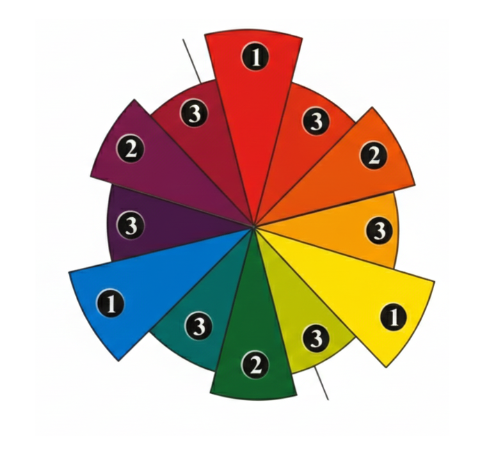
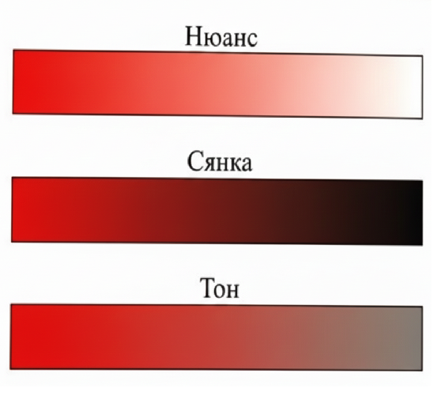
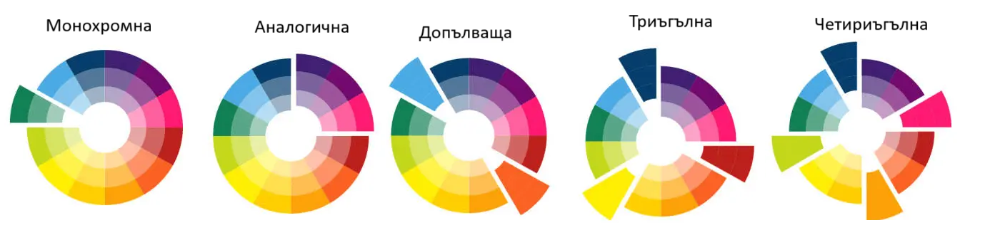
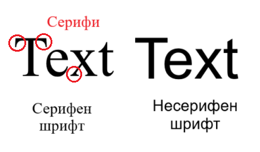

Графичен модел (mockup) на уеб страница– определяне на дизайн, цветова схема, избор на шрифтове, изработване на
графични компоненти.
Цветова схема– създаване на хармонични комбинации между цветовете.
Връзката между цветовете– може да се представи в кръгла диаграма с 12 цвята, наречена колело на
цветовете.
Основни цветове– червено, жълто, синьо.
Второстепенни цветове– оранжево, зелено, лилаво (комбинацията между основните три
цвята).
Спомагателни цветове– комбинацията между основни и второстепенни.

Видове цветове:
Неутрални цветове– бяло, черно и сиво (смес от бяло и черно) - те могат да участват във
всяка цветова схема.
Топли цветове– всички цветове, в чийто състав участват червено и жълто. Те се
асоциират със слънцето и се смята, че са активни.
Студени цветове– всички цветове, в чийто състав влиза синьото. Те се асоциират с
водата и небето и се приемат за успокояващи.
Комбинации на чистите цветове и техните вариации с неутралните цветове:
Нюанс– оттенък на чистия цвят, когато към него се добавя бяло. Тези
цветове се наричат пастелни.
Сянка– оттенък на чистия цвят, когато към него се добавя
черно.
Тон– оттенък на чистия цвят, когато към него се добавят
едновременно бяло и черно, тоест сиво.

Видове цветови схеми:
Монохромна– използва вариации на един цвят. Тя създава успокояващ ефект,
възприема се много лесно, особено ако е създадена на базата на зелените или сините цветове,
прилага се лесно, изглежда балансирано и привлекателно. При нея липсват акценти и
контрасти.
Аналогична– използва цветове, които са в съседство. Един цвят се използва за
основен, а другите допълват схемата.
Допълваща– използва два противоположни цвята от диаграмата. Тази схема работи
едновременно с топлите и студените цветове и създава хармонични контрасти.
Триъгълна– използва три цвята от диаграмата на цветовете, които са разположени
на еднакви разстояния един от друг. Предлага визуални контрасти, като е добре балансирана и
богата на цветове.
Четириъгълна– използва четири цвята, подбрани в две допълващи се бройки. Предлага
най-големи възможности за цветови вариации, но е най-трудната схема за постигане на баланс и
хармония.

Избор на цвят за фон– важен за доброто възприемане на текстовата информация. Текстът трябва да
контрастира с фона, за да бъде лесен за четене. Препоръчва се при светъл фон текстът върху него да е
тъмен и обратно - при тъмен фон цветът на текста да е светъл.
Подбор на шрифтове– важен елемент при създаване на графичен модел на уеб страница. Шрифтът е не
само средство за предаване на информация, но и художествен елемент, който взема пряко участие в
изработката на дизайн на самия уеб сайт.
Категории шрифт:
Серифни (serif)– с допълнителни графични елементи. Те натоварват по-малко
окото при четене. Затова се използват при изписването на основните текстове.
Несерифни (sans-serif)– без допълнителни графични елементи. При малки букви четенето
се затруднява, затова тогава се предпочитат несерифните шрифтове. Те имат
по-изчистен геометричен дизайн и са по-четивни за ситен текст или за устройства с
ниска разделителна способност на екрана. Често се ползват и за изработването на
дизайнерски заглавия.

Изисквания при избор на шрифт:
Трябва да се използват подходящи шрифтове. Препоръчват се Verdana, Arial, Times New Roman,
Tahoma, Helvetica. Не се препоръчват прекалено големи размери на шрифтовете.
Подходящо е големината да бъде съобразена с размера на страницата, за да не изглежда шрифтът
прекалено голям или прекалено дребен.
Не трябва да се използват повече от 2 - 3 шрифта, като едновременната употреба на различни по
стил шрифтове невинаги изглежда добре.
Добре е да се използват шрифтове от едно и също семейство с цел отделяне на основен текст и
подтекст, вместо основният да бъде в получер/удебелен стил.
Важна е четливостта - трябва да се обръща внимание на детайлите, които да се четат леко и да не
дразнят окото. Трябва да има съгласуваност по отношение на стила и размерите на целия набор от
символи, съставляващи шрифта.
В заглавията на модерните уеб сайтове все по-често се използват и артшрифтове, както и
калиграфски/ръкописни шрифтове.
Когато шрифтът се слага върху фон с натоварено съдържание, трябва да бъде удебелен, за да се
чете лесно.